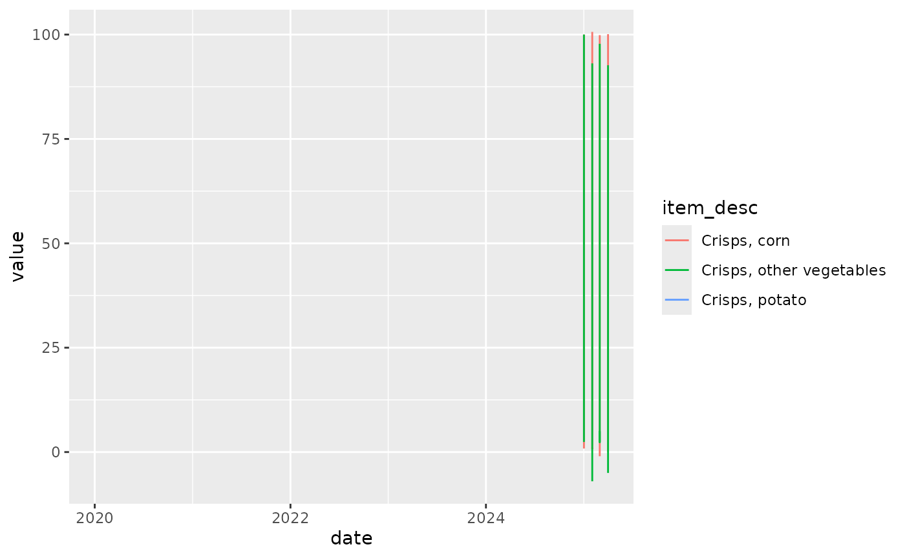

The ONS Shopping Price tool is a new data source published in May
2023. mm23 contains some experimental functions to
download and wrangle the underlying dataset.
Getting shopping price data
Download the latest data from ONS. acquire_prices()
simply downloads the full latest data download file, and returns its
location. By default it puts it into a temporary file, but you can
specify where you want to put it. acquire_prices() uses
prices_url() for its download target.
library(mm23)
# Puts the data in a temporary file and returns its name
prices <- acquire_prices()
#> Acquiring file36c4598ebc2a
prices
#> [1] "/tmp/RtmpXokyAi/file36c4598ebc2a"
# Or specify a location
# prices <- acquire_prices("~/data")
# data <- readxl::read_excel("~/data/datadownload.xlsx")Wrangling prices data
There are two complementary functions to access the prices data.
get_price_metadata() returns a dataset containing details
of the data series available. get_price_data() will return
the actual data. Below is the structure of the metadata dataset, with a
random record. Join metadata to data with item_id.
dplyr::slice_sample(mm23::get_price_metadata(prices), n = 1) |> t() |> knitr::kable()| item_id | 440231 |
| item_start | 2000-02-01 |
| coicop2 | Miscellaneous goods and services |
| coicop3 | Other services (n.e.c) |
| coicop4 | Other Services Not Elsewhere covered |
| coicop5 | Administrative fees |
| category1 | Services |
| category2 | Other |
| item_desc | Passport fees |
| weight_size | NA |
items <- mm23::get_price_metadata(prices) |>
dplyr::filter(category2 == "Crisps") |>
dplyr::select(item_id) |>
unlist()
mm23::get_price_data(prices) |>
dplyr::filter(item_id %in% items) |>
dplyr::left_join(get_price_metadata(prices)) |>
ggplot2::ggplot() +
ggplot2::geom_line(ggplot2::aes(x = date, y = value, colour = item_desc))
#> Warning: Removed 184 rows containing missing values or values outside the scale range
#> (`geom_line()`).